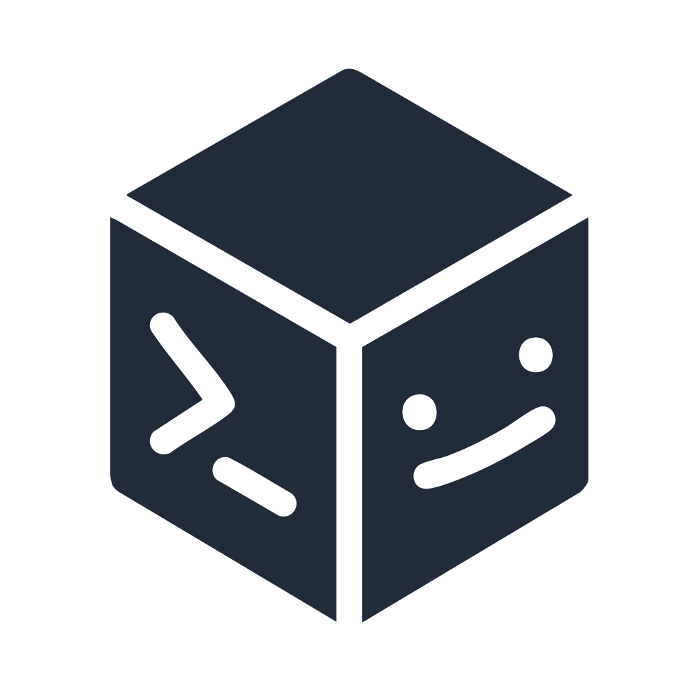

Homelab & Self-Hosting 🏠
Servidores & Open Source & Linux 🐧
IA & Automatización 🤖⚙️
3D, Mecánica e Impresión 🛠️🖨️
Todo lo monto en casa y lo comparto en Twitch. También subo contenido a YouTube.
Twitch
YouTube
Twitter
Discord